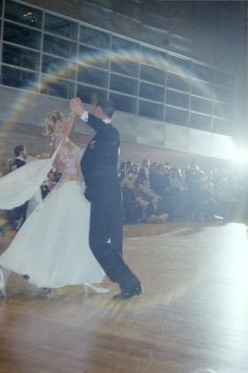
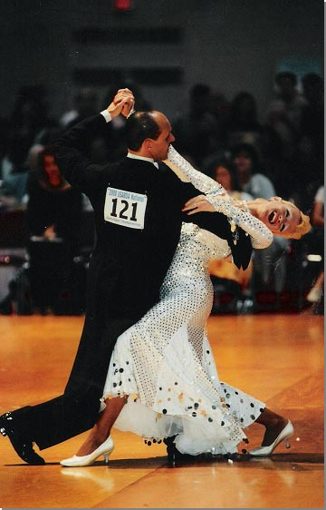
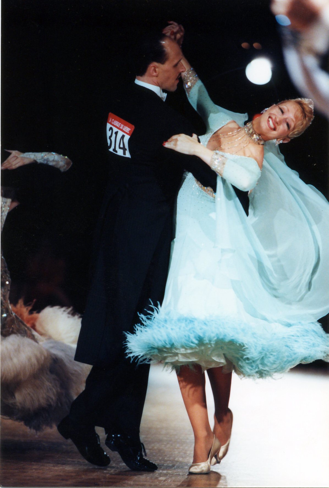

Origin story
I was born in a crossfire hurricane. OK, not really. It was a boring birth in a conventional hospital somewhere in the United States.
I like to dance
 
I used to fly
I used to fly the Diamond Katana.Great plane!
I was born in a crossfire hurricane. OK, not really. It was a boring birth in a conventional hospital somewhere in the United States.